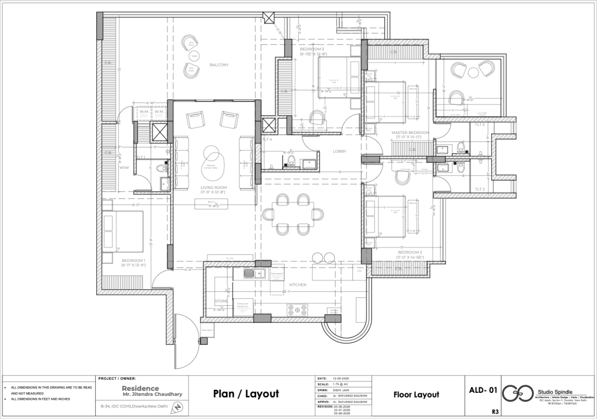

<!doctype html><html lang="en"><meta charset="utf-8"><meta name="viewport" content="width=device-width,initial-scale=1"><title>B-34 | Spatial review</title>
<style>
:root{--ink:#223a4d;--paper:#edf1f3;--line:#c7d2d9;--blue:#356987;--accent:#ab7146;--muted:#617887}*{box-sizing:border-box}body{margin:0;color:var(--ink);background:var(--paper);font:14px -apple-system,BlinkMacSystemFont,'Segoe UI',sans-serif}header{height:76px;padding:16px 24px;display:flex;align-items:center;gap:24px;border-bottom:1px solid var(--line)}h1{font:28px Georgia,serif;margin:0}small{display:block;color:var(--muted);font-size:11px;letter-spacing:.1em;text-transform:uppercase;margin-bottom:3px}.badge{margin-left:auto;color:#885b36;font-size:12px}main{display:grid;grid-template-columns:260px 1fr;height:calc(100dvh - 76px)}aside{padding:22px 18px;overflow:auto;border-right:1px solid var(--line);background:#f8fafb}h2{font:20px Georgia,serif;margin:5px 0 12px}p{line-height:1.55;font-size:13px;color:var(--muted)}button,a.link{font:inherit;cursor:pointer;border:1px solid var(--line);background:#fff;color:var(--ink);padding:10px 12px;border-radius:5px;text-align:left}button:hover{border-color:var(--blue);background:#eef5f9}button:focus-visible,a:focus-visible{outline:3px solid #dfa670}button.active{background:var(--ink);color:white}button:disabled{opacity:.55}.row{display:flex;gap:6px;margin:10px 0}.row button{flex:1}.rooms{display:grid;gap:7px;margin:20px 0}a{color:var(--blue)}#viewport{position:relative;min-width:0;touch-action:none}canvas{display:block;width:100%;height:100%}#status{position:absolute;bottom:18px;left:20px;right:20px;background:#f8fafbe8;border:1px solid var(--line);padding:11px 15px;font-size:12px;pointer-events:none}#plan{position:absolute;inset:0;background:white;display:none;overflow:auto}#plan img{width:100%;height:100%;object-fit:contain}#motion{display:none;position:absolute;bottom:88px;right:24px;grid-template-columns:42px 42px 42px;gap:4px}#motion button{text-align:center;padding:12px 5px;touch-action:none}.meta{margin-top:24px;border-top:1px solid var(--line);padding-top:16px}#load{margin-top:10px;color:var(--muted);font-size:12px}
@media(max-width:750px){header{height:64px;padding:10px 15px}header .badge{max-width:140px}main{height:calc(100dvh - 64px);grid-template-columns:170px 1fr}aside{padding:14px 10px}h1{font-size:24px}.rooms{gap:5px;margin:12px 0}button{font-size:12px;padding:9px}aside p{font-size:11px}.meta{margin-top:15px}#status{left:8px;right:8px;bottom:8px;font-size:11px}#motion{right:8px}h2{font-size:18px}}
</style><header><div><small>Studio Spindle / spatial review</small><h1>B-34, Dwarka</h1></div><span class="badge">Working draft · appearance unapproved</span></header><main><aside><h2>Explore the apartment</h2><p>The CAD shell and original room models, together at their original scale.</p><div class="row"><button id="overview" class="active">3D</button><button id="top">Top</button><button id="planBtn">Plan</button></div><button id="walk" style="width:100%">Walk shell from entrance</button><div class="rooms" id="rooms"></div><button id="models" style="width:100%">Show bedroom models</button><div id="load" role="status" aria-live="polite">Loading the shell…</div><div class="meta"><h2>Review evidence</h2><p><a href="assets/cad-draft/registration-and-paths.png" target="_blank">Model alignment and routes ↗</a></p><p><a href="assets/cad-draft/flat-cad.blend">Editable Blender shell</a></p><p><a href="index.html" target="_blank">Existing room experience ↗</a></p><p>Wall heights and window sills are provisional. This review checks space and placement, not final materials.</p></div></aside><div id="viewport"><div id="plan"></div><div id="motion"><span></span><button data-key="w" aria-label="Move forward">↑</button><span></span><button data-key="a" aria-label="Move left">←</button><button data-key="s" aria-label="Move backward">↓</button><button data-key="d" aria-label="Move right">→</button></div><div id="status" role="status">Drag to orbit · scroll to zoom</div></div></main>
<script src="assets/lib/three.min.js"></script><script src="assets/lib/GLTFLoader.js"></script><script src="assets/lib/DRACOLoader.js"></script><script src="rooms-materials.js"></script><script src="rooms-nav.js"></script><script>
(async()=>{'use strict';const $=x=>document.getElementById(x),V=$('viewport'),S=$('status'),keys={},loaded={};let mode='orbit',yaw=.62,pitch=.8,dist=26,target=new THREE.Vector3(9,0,-7.3),data,nav,modelsVisible=false,loading=false,activeRoom=null;
const scene=new THREE.Scene();scene.background=new THREE.Color('#edf1f3');const camera=new THREE.PerspectiveCamera(48,1,.04,150);const renderer=new THREE.WebGLRenderer({antialias:true});renderer.setPixelRatio(Math.min(devicePixelRatio,1.5));renderer.outputEncoding=THREE.sRGBEncoding;renderer.toneMapping=THREE.ACESFilmicToneMapping;renderer.toneMappingExposure=.76;renderer.localClippingEnabled=true;V.prepend(renderer.domElement);
scene.add(new THREE.HemisphereLight(0xd8e7ff,0xb8a88f,.75));const sun=new THREE.DirectionalLight(0xffe9d2,1.0);sun.position.set(-6,18,6);scene.add(sun);const fill=new THREE.DirectionalLight(0xffffff,.4);fill.position.set(15,10,-18);scene.add(fill);
const draco=new THREE.DRACOLoader();draco.setDecoderPath('assets/lib/draco/');const loader=new THREE.GLTFLoader();loader.setDRACOLoader(draco);const cut=new THREE.Plane(new THREE.Vector3(0,-1,0),1.35);let shell;
function loadGLB(url){return new Promise((ok,no)=>loader.load(url,g=>ok(g.scene),undefined,no))}
function fit(){const w=V.clientWidth,h=V.clientHeight;renderer.setSize(w,h);camera.aspect=w/h;camera.updateProjectionMatrix();if(mode!=='walk'){dist=Math.max(24,20/camera.aspect);orbit()}}
function orbit(){camera.position.set(target.x+dist*Math.sin(yaw)*Math.cos(pitch),target.y+dist*Math.sin(pitch),target.z+dist*Math.cos(yaw)*Math.cos(pitch));camera.lookAt(target)}
function setMode(m){mode=m;camera.fov=m==='walk'?72:48;camera.updateProjectionMatrix();$('plan').style.display=m==='plan'?'block':'none';$('motion').style.display=m==='walk'?'grid':'none';for(const id of ['overview','top','planBtn','walk'])$(id).classList.toggle('active',id===({orbit:'overview',top:'top',plan:'planBtn',walk:'walk'}[m]));renderer.clippingPlanes=m==='top'?[cut]:[];S.textContent=m==='walk'?'Drag to look · WASD / arrows to move · Esc returns to overview.':'Drag to orbit · scroll to zoom. Bedroom overlay preserves source geometry.'}
/* The clip exists to stop exported geometry projecting into circulation. A balcony
   is not circulation - it belongs to the room - and bed3's traced boundary stops at
   13.20 while its own balcony wall and glazing sit at 13.32 to 14.52, so the clip was
   deleting them and leaving the room open to view. Extend the box where a room
   legitimately continues past its boundary. */
const CLIP_EXTEND={bed3:{y1:1.45}};
function overlayClip(root,rid,on){const ex=CLIP_EXTEND[rid]||{},p=data.rooms[rid].boundary_xy,x=p.map(v=>v[0]),y=p.map(v=>v[1]),planes=on?[new THREE.Plane(new THREE.Vector3(1,0,0),-Math.min(...x)),new THREE.Plane(new THREE.Vector3(-1,0,0),Math.max(...x)),new THREE.Plane(new THREE.Vector3(0,0,-1),-Math.min(...y)),new THREE.Plane(new THREE.Vector3(0,0,1),Math.max(...y)+(ex.y1||0))]:null;root.traverse(o=>{if(!o.isMesh)return;for(const m of [].concat(o.material)){m.clippingPlanes=planes;m.clipIntersection=false;m.needsUpdate=true}})}
function home(top=false){activeRoom=null;if(shell)shell.visible=true;Object.entries(loaded).forEach(([rid,r])=>{r.visible=modelsVisible;overlayClip(r,rid,true)});$('models').textContent=modelsVisible?'Hide bedroom models':'Show bedroom models';setMode(top?'top':'orbit');target.set(9,0,-7.3);yaw=top?0:.62;pitch=top?Math.PI/2-.001:.8;fit()}
function canWalk(x,z){if(activeRoom){const n=window.ROOMNAV[activeRoom],t=data.transforms[activeRoom].translation_xyz,lx=x-t[0],ly=-(z-t[2]);for(const [dx,dy] of [[0,0],[.12,0],[-.12,0],[0,.12],[0,-.12]]){const a=Math.floor((lx+dx-n.min[0])/n.cell),b=Math.floor((ly+dy-n.min[1])/n.cell);if(a<0||b<0||a>=n.w||b>=n.h||n.grid[b*n.w+a]!=='0')return false;}return true;}const gx=Math.floor(x/nav.cell_m),gy=Math.floor(-z/nav.cell_m);return gx>=0&&gy>=0&&gx<nav.width&&gy<nav.height&&nav.grid[gy][gx]==='0'}
function startWalk(){$('load').textContent='Walking the neutral CAD shell. Bedroom buttons open furnished rooms.';activeRoom=null;modelsVisible=false;if(shell)shell.visible=true;Object.values(loaded).forEach(r=>r.visible=false);$('models').textContent='Show bedroom models';setMode('walk');const route=nav.results.dining.route_xy,a=route[0],b=route[Math.min(20,route.length-1)];camera.position.set(a[0],1.6,-a[1]);yaw=Math.atan2(-(b[0]-a[0]),b[1]-a[1]);pitch=0;look()}
function look(){camera.rotation.order='YXZ';camera.rotation.set(pitch,yaw,0)}
function palette(root,rid){root.traverse(o=>{if(!o.isMesh)return;for(const m of [].concat(o.material)){const exact=window.ROOMMAT?.rooms?.[rid]?.[m.name];/* her own V-Ray values fill what the hand-tuned palette never covered, but never over a real texture */const vray=!exact&&!m.map&&window.ROOMMAT?.vray?.[rid]?.[m.name];const e=exact||vray||(!m.map&&window.ROOMMAT?.common?.find(e=>m.name.toLowerCase().includes(e.match)));if(e){if(exact)m.map=null;m.color.setHex(e.color);if(e.rough!==undefined)m.roughness=e.rough;if(e.metal)m.metalness=1;/* glazing: r128 MeshStandard has no transmission, so approximate with alpha. Without this a window is an opaque slab. */if(e.opacity!==undefined){m.transparent=true;m.opacity=e.opacity;m.depthWrite=false;}}m.side=THREE.DoubleSide;m.needsUpdate=true}})}
async function room(rid){if(loaded[rid])return loaded[rid];const t=data.transforms[rid];const root=await loadGLB('assets/rooms/'+rid+'.glb');palette(root,rid);root.position.fromArray(t.translation_xyz);root.rotation.fromArray(t.rotation_xyz);root.visible=modelsVisible;scene.add(root);loaded[rid]=root;return root}
async function toggleModels(){if(loading)return;if(activeRoom){home();$('load').textContent='Returned to the apartment overview.';return}modelsVisible=!modelsVisible;$('models').textContent=modelsVisible?'Hide bedroom models':'Show bedroom models';Object.entries(loaded).forEach(([rid,r])=>{r.visible=modelsVisible;overlayClip(r,rid,true)});if(!modelsVisible)return;loading=true;$('models').disabled=true;try{/* await inside the loop downloaded 35 MB of rooms one after another, about 46 s. They are independent, so fetch them together and let the slowest one set the pace. */const ids=Object.keys(data.transforms);let done=0;$('load').textContent='Loading 4 rooms…';await Promise.all(ids.map(rid=>room(rid).then(root=>{overlayClip(root,rid,true);$('load').textContent='Loaded '+(++done)+' of '+ids.length+'…'})));$('load').textContent='4 original bedroom models loaded. Materials remain an approximation.'}catch(e){$('load').textContent='Model loading failed: '+e.message;console.error(e)}finally{loading=false;$('models').disabled=false}}
async function visit(rid,study=false){if(loading)return;modelsVisible=true;loading=true;$('models').disabled=true;$('load').textContent='Opening '+names[rid]+'…';try{const root=await room(rid);if(shell)shell.visible=false;Object.entries(loaded).forEach(([id,r])=>r.visible=id===rid);overlayClip(root,rid,false);root.visible=true;const t=data.transforms[rid].translation_xyz,n=window.ROOMNAV[rid];const views={master:{spawn:n.spawn,aim:[-2,-.85],pitch:-.20,fov:72},bed1:{spawn:n.spawn,aim:[-.6,-1.35],pitch:-.20,fov:72},bed2:{spawn:[-.9,1.3],aim:[1.28,-.35],pitch:-.12,fov:78},bed3:{spawn:n.spawn,aim:[.3,-.35],pitch:-.20,fov:72}};const v=study?{spawn:[2.152,.34],aim:[.7,-.65],pitch:-.20,fov:72}:views[rid];setMode('walk');camera.fov=v.fov;camera.updateProjectionMatrix();camera.position.set(t[0]+v.spawn[0],1.6,t[2]-v.spawn[1]);activeRoom=rid;yaw=Math.atan2(-(v.aim[0]-v.spawn[0]),v.aim[1]-v.spawn[1]);pitch=v.pitch;look();S.textContent='Drag to look · WASD / arrows to walk within this room. Esc returns to overview.';$('models').textContent='Return to apartment';$('load').textContent='Viewing '+names[rid]+'. Source design, draft placement.'}catch(e){if(shell)shell.visible=true;$('load').textContent='Could not load room: '+e.message}finally{loading=false;$('models').disabled=false}}
const names={master:'Master + study',bed1:'Bedroom 1',bed2:'Bedroom 2',bed3:'Bedroom 3'};
try{[data,nav]=await Promise.all(['scene','navigation'].map(n=>fetch('assets/cad-draft/'+n+'.json').then(r=>{if(!r.ok)throw Error(r.status);return r.json()})));shell=await loadGLB('assets/cad-draft/flat-cad.glb');shell.traverse(o=>{if(o.isMesh){const edges=new THREE.LineSegments(new THREE.EdgesGeometry(o.geometry,30),new THREE.LineBasicMaterial({color:0x536d7d,transparent:true,opacity:.48}));o.add(edges)}});scene.add(shell);for(const rid of ['master','bed1','bed2','bed3']){const b=document.createElement('button');b.textContent=names[rid]+' ↗';b.onclick=()=>visit(rid);$('rooms').append(b);if(rid==='master'){const study=document.createElement('button');study.textContent='Master study ↗';study.onclick=()=>visit('master',true);$('rooms').append(study)}}$('load').textContent='Shell ready. Models load on demand.';home()}catch(e){$('load').textContent='Could not load draft. Open through the local server, not file://.';console.error(e)}
$('overview').onclick=()=>home();$('top').onclick=()=>home(true);$('planBtn').onclick=()=>setMode('plan');$('walk').onclick=startWalk;$('models').onclick=toggleModels;
let down=false,px=0,py=0;renderer.domElement.onpointerdown=e=>{down=true;px=e.clientX;py=e.clientY;renderer.domElement.setPointerCapture(e.pointerId)};renderer.domElement.onpointerup=()=>down=false;renderer.domElement.onpointermove=e=>{if(!down)return;const dx=e.clientX-px,dy=e.clientY-py;px=e.clientX;py=e.clientY;if(mode==='walk'){yaw-=dx*.004;pitch=THREE.MathUtils.clamp(pitch-dy*.004,-1.1,1.1);look()}else if(mode==='orbit'||mode==='top'){mode='orbit';yaw-=dx*.005;pitch=THREE.MathUtils.clamp(pitch+dy*.005,.12,1.56);orbit()}};renderer.domElement.addEventListener('wheel',e=>{e.preventDefault();if(mode!=='walk'){dist=THREE.MathUtils.clamp(dist*Math.exp(e.deltaY*.001),5,90);orbit()}},{passive:false});
window.addEventListener('keydown',e=>{if(['ArrowUp','ArrowDown','ArrowLeft','ArrowRight',' '].includes(e.key))e.preventDefault();keys[e.key.toLowerCase()]=true;if(e.key==='Escape')home()});window.addEventListener('keyup',e=>keys[e.key.toLowerCase()]=false);window.addEventListener('blur',()=>{for(const k in keys)keys[k]=false});for(const b of document.querySelectorAll('[data-key]')){b.onpointerdown=e=>{keys[b.dataset.key]=true;b.setPointerCapture(e.pointerId)};b.onpointerup=b.onpointercancel=()=>keys[b.dataset.key]=false}window.addEventListener('resize',fit);
let last=performance.now();function tick(now){requestAnimationFrame(tick);const dt=Math.min((now-last)/1000,.04);last=now;if(mode==='walk'&&nav){const f=(keys.w||keys.arrowup?1:0)-(keys.s||keys.arrowdown?1:0),r=(keys.d||keys.arrowright?1:0)-(keys.a||keys.arrowleft?1:0),speed=dt*1.4/Math.max(1,Math.hypot(f,r));const dx=(-Math.sin(yaw)*f+Math.cos(yaw)*r)*speed,dz=(-Math.cos(yaw)*f-Math.sin(yaw)*r)*speed;if(canWalk(camera.position.x+dx,camera.position.z))camera.position.x+=dx;if(canWalk(camera.position.x,camera.position.z+dz))camera.position.z+=dz}renderer.render(scene,camera)}fit();requestAnimationFrame(tick);
})();</script></html>
